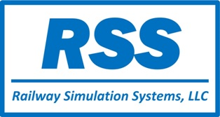
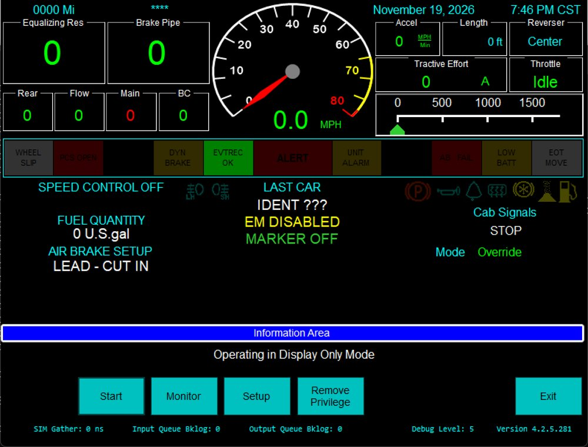

Locomotive simulator control stands and software for railroad training.
Railway Simulation Systems LLC (RSS) designs, builds and supports LocoSIM locomotive simulators. We build full-size locomotive control stands, the interface boards that connect them to a PC, and the FIRE operator screen software that runs them. Our simulators are used to train locomotive engineers on real controls, with the train simulator showing the view out the window.
RSS publishes and digitally signs the LocoSIM software. Software published by Railway Simulation Systems LLC is distributed only to our licensed customers.
Locomotive control stands with throttle, dynamic brake, automatic and independent brake handles, reverser, horn, bell, sand, lights, gauges and alarms, wired to the simulator PC.
Windows software that reads the control stand, drives its gauges and lamps, and shows a locomotive-style operator display. Works with Open Rails and Run8.
RSS's own USB input/output boards that connect the handles, switches, gauges and lamps of a control stand to the simulator PC.
Extra operator displays on small networked computers, so cab displays and end-of-train units can be placed anywhere on the stand.
Installation, calibration, licensing and ongoing support for every stand we deliver.
